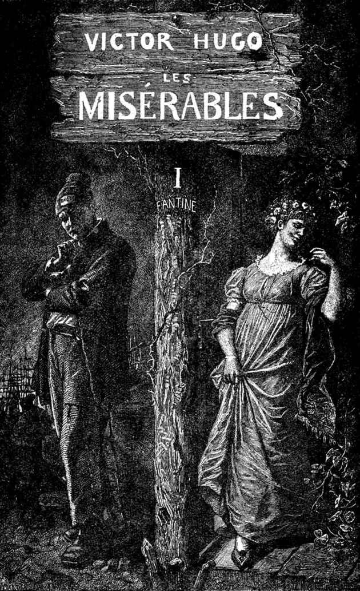
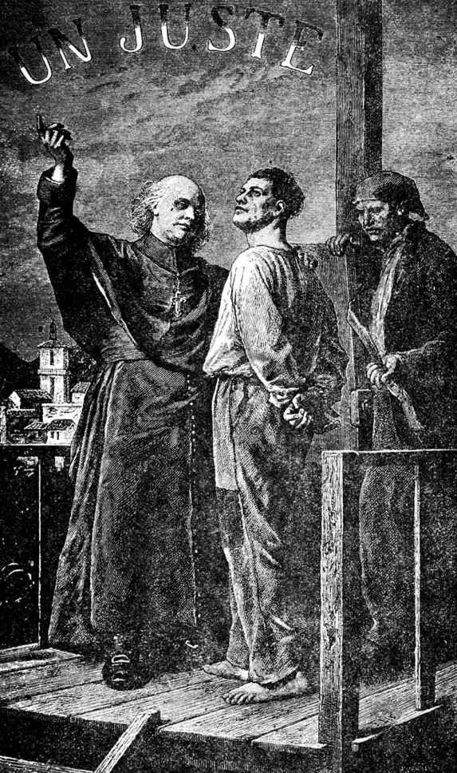

芳汀

一八一五年，迪涅[1]的主教是查理·佛朗沙·卞福汝·米里哀先生。他是个七十五岁左右的老人；从一八〇六年起，他已就任迪涅区主教的职位。
虽然这些小事绝不触及我们将要叙述的故事的本题，但为了全面精确起见，在此地提一提在他就任之初，人们所传播的有关他的一些风闻与传说也并不是无用的。大众关于某些人的传说，无论是真是假，在他们的生活中，尤其是在他们的命运中所占的地位，往往和他们亲身所做的事是同等重要的。米里哀先生是艾克斯法院的一个参议的儿子，所谓的司法界的贵族。据说他的父亲因为要他继承[2]那职位，很早，十八岁或二十岁，就按照司法界贵族家庭间相当普遍的习惯，为他完了婚。米里哀先生虽已结婚，据说仍常常惹起别人的谈论。他品貌不凡，虽然身材颇小，但是生得俊秀，风度翩翩，谈吐隽逸；他一生的最初阶段完全消磨在交际场所和与妇女们的厮混中。革命[3]爆发了，事变迭出，司法界贵族家庭因受到摧毁，驱逐，追捕而东奔西散了。米里哀先生，当革命刚开始时便出亡到意大利。他的妻，因早已害肺病，死了。他们一个孩子也没有。此后，他的一生有些什么遭遇呢？法国旧社会的崩溃，他自己家庭的破落，一般流亡者可能因远道传闻和恐怖的夸大而显得更加可怕的九三年[4]的种种悲剧，是否使他在思想上产生过消沉和孤独的意念呢？一个人在生活上或财产上遭了大难还可能不为所动，但有时有一种神秘可怕的打击，打在人的心上，却能使人一蹶不振；一向在欢乐和温情中度日的他，是否受过那种突如其来的打击呢？没有谁那样说，我们所知道的只是：他从意大利回来，就已经当了教士了。
一八〇四年，米里哀先生是白里尼奥尔的本堂神甫。他当时已经老了，过着深居简出的生活。
接近加冕[5]时，他为了本区的一件不知道什么小事，到巴黎去过一趟。他代表他教区的信众们向上级有所陈请，曾夹在一群显要人物中去见过费什红衣主教。一天，皇帝来看他的舅父[6]，这位尊贵的本堂神甫正在前厅候见，皇上也恰巧走过。拿破仑看见这位老人用双好奇的眼睛瞧着他，便转过身来，突然问道：
“瞧着我的那汉子是谁呀？”
“陛下，”米里哀先生说，“您瞧一个汉子，我瞧一个天子。彼此都还上算。”
皇帝在当天晚上向红衣主教问明了这位本堂神甫的姓名。不久以后，米里哀先生极其诧异地得到被任为迪涅主教的消息。
此外，人们对米里哀先生初期生活所传述的轶事，哪些是真实的？谁也不知道。很少人知道米里哀这家人在革命以前的情况。
任何人初到一个说话的嘴多而思考的头脑少的小城里总有够他受的，米里哀先生所受的也不例外。尽管他是主教，并且正因为他是主教，他就得受。总之，牵涉到他名字的那些谈话，也许只是一些闲谈而已，内容不过是听来的三言两语和捕风捉影的东西，有时甚至连捕风捉影也说不上，照南方人那种强烈的话来说，只是“胡诌”而已。
不管怎样，他住在迪涅担任教职九年以后，当初成为那些小城市和小人们谈话的题材的闲话，都完全被丢在脑后了。没有谁再敢提到，甚至没有谁再敢回想那些闲话了。
米里哀先生到迪涅时有个老姑娘伴着他，这老姑娘便是比他小十岁的妹子巴狄斯丁姑娘。
他们的佣人只是一个和巴狄斯丁姑娘同年的女仆，名叫马格洛大娘，现在，她在做了“司铎先生的女仆”后，取得了这样一个双重头衔：姑娘的女仆和主教的管家。
巴狄斯丁姑娘是个身材瘦长、面貌清癯、性情温厚的人儿，她体现了“可敬”两个字所表达的理想，因为一个妇人如果要达到“可敬”的地步，似乎总得先做母亲。她从不曾有过美丽的时期，她的一生只是一连串圣洁的工作，这就使她的身体呈现白色和光彩；将近老年时，她具有我们所谓的那种“慈祥之美”。她青年时期的消瘦到她半老时，转成了一种清虚疏朗的神韵，令人想见她是一个天使。她简直是个神人，处女当之也有逊色。她的身躯，好像是阴影构成的，几乎没有足以显示性别的实体，只是一小撮透着微光的物质，秀长的眼睛老低垂着，我们可以说她是寄存在人间的天女。
马格洛大娘是个矮老、白胖、臃肿、忙碌不定、终日气喘吁吁的妇人，一则因为她操作勤劳，再则因为她有气喘病。
米里哀先生到任以后，人们就照将主教列在仅次于元帅地位的律令所规定的仪节，把他安顿在主教院里。市长和议长向他作了初次的拜访，而他，在他那一面，也向将军和省长作了初次的拜访。
部署既毕，全城静候主教执行任务。
[1] 迪涅（Digne），在法国南部，是下阿尔卑斯省的省会。
[2] 当时法院的官职是可以买的，并可传给儿孙。
[3] 革命，指一七八九年法国资产阶级革命。
[4] 一七九三年是革命达到高潮的一年。
[5] 加冕，拿破仑于一八〇四年三月十八日称帝，十二月二日加冕。
[6] 指费什。